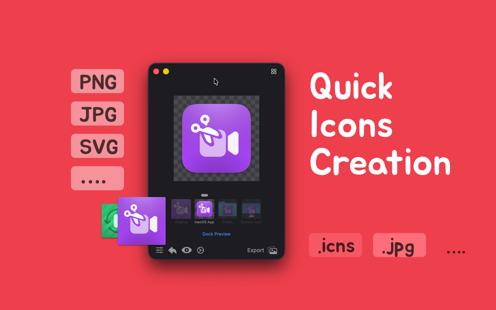
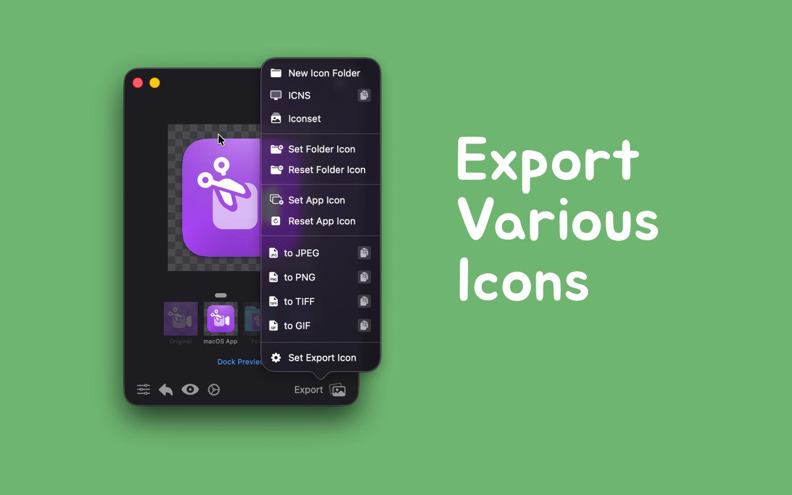

Easily create and personalize icons from images, supporting macOS and iOS icon generation, folder icon creation and setting, and providing icon format conversion features.
- Folder Icons: Quickly customize and set your folder icons with simple operations, making your folders more personalized and unique.
- App Icons: Compatible with all operating systems, supporting the import of any image and converting it into a complete, usable app icon. Specifically tailored for Apple platforms (iOS and macOS), supporting various required icon formats to meet different application scenarios.
- Icon Format Conversion: Easily convert icons to other formats, supporting common icon formats such as PNG, JPEG, TIFF, etc., making it convenient to switch between different platforms.
This tool helps you create any type of icon for your application, automatically converting it to the required 1x, 2x (retina), and 3x formats, and generating a complete image set to ensure perfect display on all devices and resolutions.